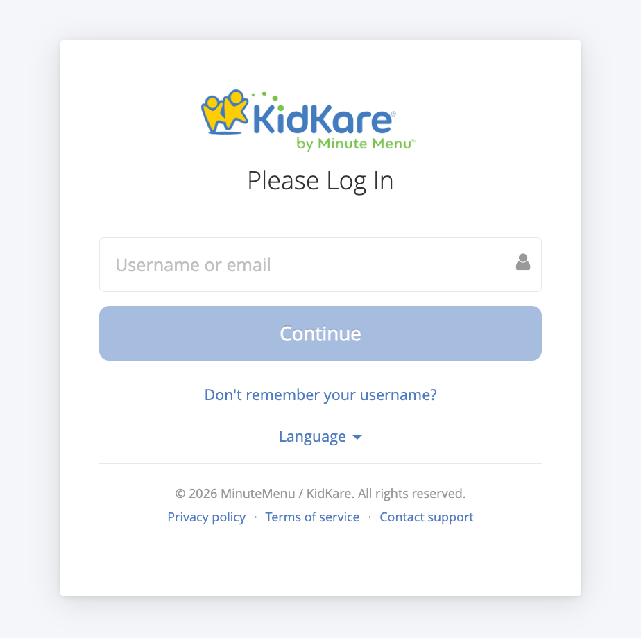
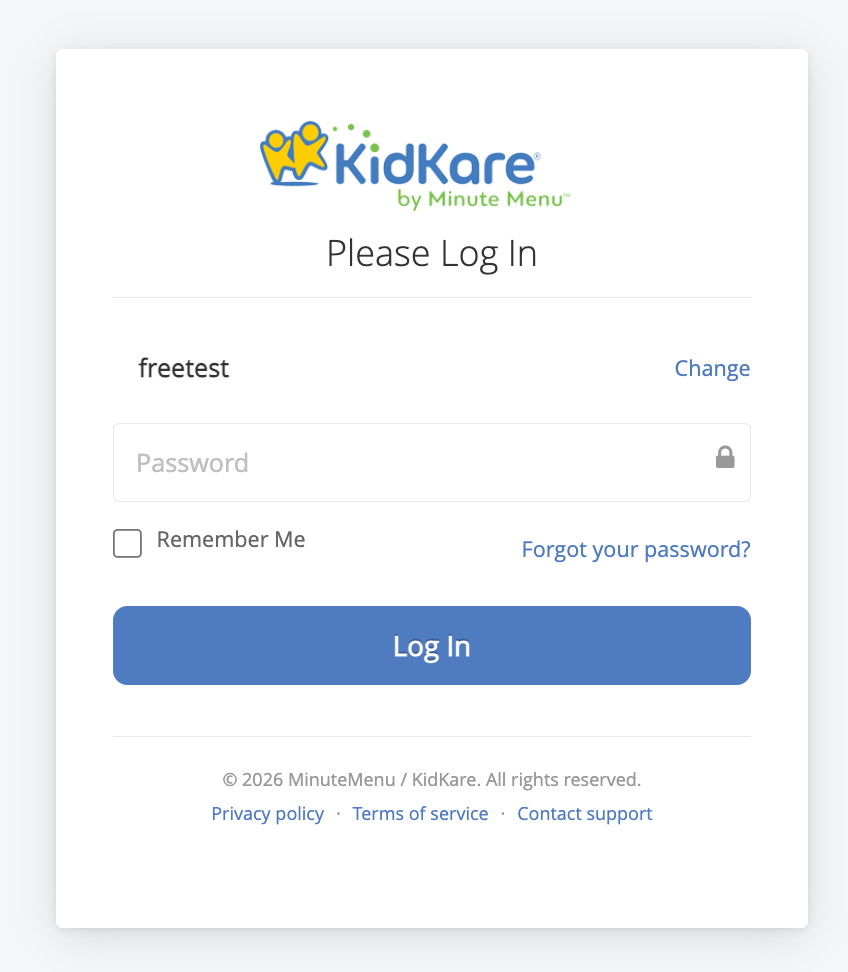
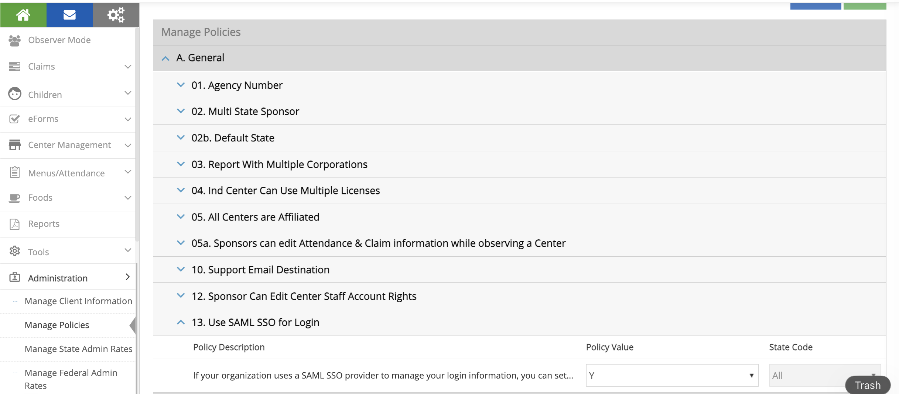
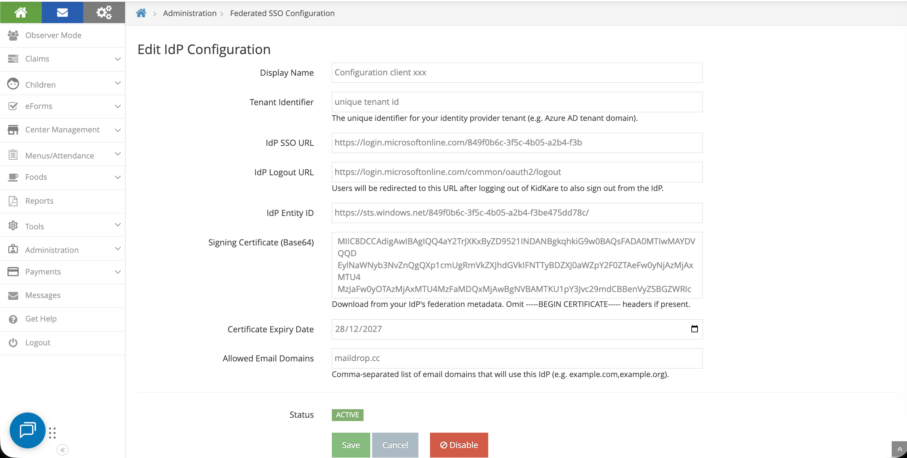
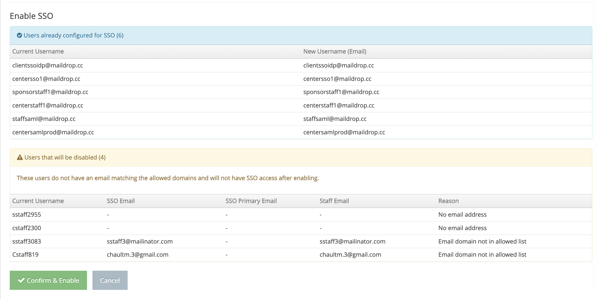
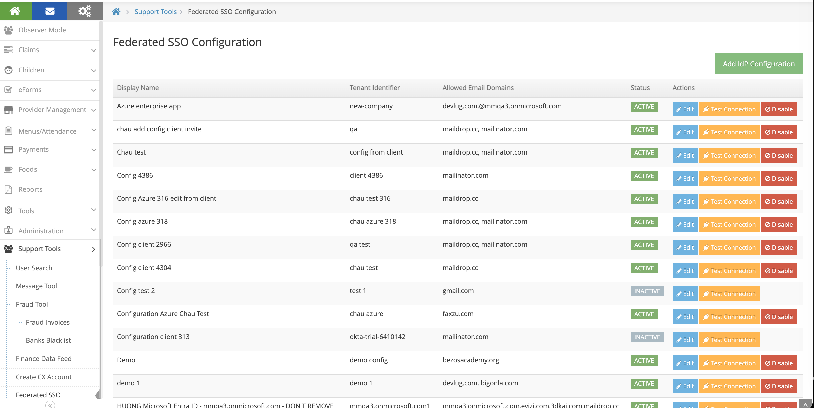
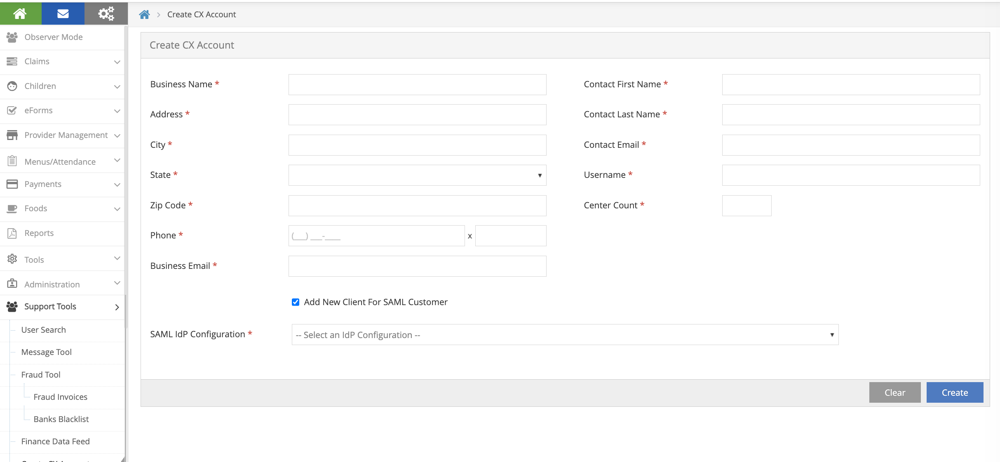

KidKare SAML SSO Guide
This guide covers the SAML Single Sign-On (SSO) feature in KidKare — how it changes the login experience, how to set it up, and how to manage it.
What Changes for End Users
With SSO enabled, the login flow changes:
- User enters their username or email address on the KidKare login page and clicks Continue
- KidKare checks if the email domain is SSO-enabled
- SSO-enabled: user is redirected to their corporate identity provider (e.g., Microsoft login) to authenticate, then automatically logged back into KidKare
- Not SSO-enabled: the standard password field appears and login works as before


Common Login Errors
| Error Message | Meaning |
|---|---|
| "Your account has been deactivated." | SSO account is disabled — contact admin |
| "Your account has been locked." | SSO account is locked — contact admin |
| "The email address you used to sign in does not match." | Email from IdP differs from what was entered on login page |
| "Single sign-on authentication failed." | SAML assertion validation failed — try again or contact admin |
Case 1: Migrate Existing KK Users to SSO
Use this when a client already has a KidKare account and wants to switch their users from native username/password login to SSO.
Step 1: Enable Policy A.13
- Log in as a Sponsor Admin
- Go to Administration > Manage Policies
- Find policy A.13 (
USE_SAML_SSO_FOR_LOGIN) - Set the value to Y
- Click Save
This makes the Federated SSO Configuration menu visible under Administration.

Step 2: Configure Your Azure SAML App
In Azure Portal > Entra ID > Enterprise Applications > [Your App] > Single sign-on:
Basic SAML Configuration
| Field | Value |
|---|---|
| Identifier (Entity ID) | https://api.kidkare.com/ssoservice |
| Reply URL (ACS URL) | https://api.kidkare.com/ssoservice/auth/federated/callback |
Attributes & Claims
Important: Click Edit on Attributes & Claims. Click on Unique User Identifier (Name ID). Change the source attribute from
user.userprincipalnametouser.mail. Save.This is required. The default
user.userprincipalnamewill not work with KidKare.
SAML Certificates
- Download the Certificate (Base64) file
- Note the certificate expiration date
Copy These Values (you'll need them in Step 3)
| Azure Field | KidKare Field |
|---|---|
| Login URL | IdP SSO URL |
| Azure AD Identifier | IdP Entity ID |
Step 3: Update IdP Configuration in KidKare
Go to Administration > Federated SSO Configuration
Fill in the form:
| KidKare Field | Where to Get It |
|---|---|
| Display Name | Your choice, e.g., "Contoso Azure AD" |
| Tenant Identifier | Unique |
| IdP SSO URL | Login URL from Azure (Step 2) |
| IdP Logout URL | https://login.microsoftonline.com/common/oauth2/logout |
| IdP Entity ID | Azure AD Identifier from Azure (Step 2) |
| Signing Certificate (Base64) | Open the downloaded .cer file in a text editor, copy the content between the BEGIN and END lines |
| Certificate Expiry Date | From Azure certificate section |
| Allowed Email Domains | Comma-separated list of your email domains, e.g.,contoso.com |
Click Save.

Support Team: Managing IdP Configurations
The KidKare support team with SystemConfig permission can:
- Create IdP configurations on behalf of clients
- Edit existing configurations (e.g., update certificate when it expires, change allowed domains)
- Assign an IdP configuration to a sponsor
This means clients don't have to configure everything themselves. Support can set up the IdP config (Step 3), then the Sponsor Admin only needs to enable the policy (Step 1) and click Enable SSO (Step 4).
To access: Administration > Federated SSO Configuration (visible to SystemConfig users regardless of policy A.13).
Step 4: Enable SSO
- Click the Enable SSO button on the configuration page
- The system will automatically:
- Test the connection to your identity provider
- Validate all existing users
- Review the user lists:
| List | Meaning |
|---|---|
| Users already configured for SSO | Ready to go, no changes needed |
| Users to be migrated | Their username will change to their email |
| Users that will be disabled | No valid email found — they won't have SSO access |

Recommendation: Before clicking "Confirm & Enable", review the "disabled" list. Add valid email addresses to those users first so the migration goes smoothly. You can cancel, update the users, then click Enable SSO again.
- Click Confirm & Enable when ready
Adding New Users After SSO Is Enabled
New staff members added after SSO is enabled automatically get SSO access:
- Add a new staff member through Manage Centers > [Center] > User Permissions
- Use an email that matches your allowed domains
- The system automatically sets them up for SSO login
- They receive an invitation email with instructions to log in using their corporate credentials
How to Revert to Native KidKare Login
If you need to switch back to username/password login, there are two ways:
Option A: Disable the IdP Configuration
- Go to Administration > Federated SSO Configuration
- Click Disable on the active configuration
Option B: Disable Policy A.13
- Go to Administration > Manage Policies
- Set policy A.13 to N
- Click Save
Both options will return all users to username/password login. Users who were created during the SSO period (never had a KidKare password) will need to:
- Go to the login page
- Click Forgot Password
- Set a new KidKare password
You will receive an email listing these users so you can notify them.
Case 2: Enroll New Client with SSO
Use this when onboarding a brand new client who wants SSO from the start.
Step 1: Create IdP Configuration (Support Team)
- Go to Support Tools > Federated SSO Configuration
- Click Add IdP Configuration
- Fill in the IdP details (same fields as Case 1, Step 3) using information provided by the client
- Click Save

Step 2: Configure Client's Azure SAML App
The client configures their Azure Enterprise Application (same as Case 1, Step 2):
- Set Identifier (Entity ID) and Reply URL (ACS URL) from the SP Information section
- Change Unique User Identifier (Name ID) to
user.mail - Download the Certificate (Base64)
Step 3: Create CX Account with SSO
- Go to Support > Create CX Account
- Fill in the standard client account details
- Check the "Add New Client For SAML Customer" checkbox
- A dropdown appears — select the IdP Configuration created in Step 1
- Click Create

This automatically:
- Creates the CX account
- Assigns the selected IdP config to the new client
- Enables the IdP config
- Sets policy A.13 (USE_SAML_SSO_FOR_LOGIN) to Y
- Sets up the admin user for SSO login
- Sends an invitation email to the admin user
The new client is ready to log in with SSO immediately — no migration needed since there are no existing users to migrate.